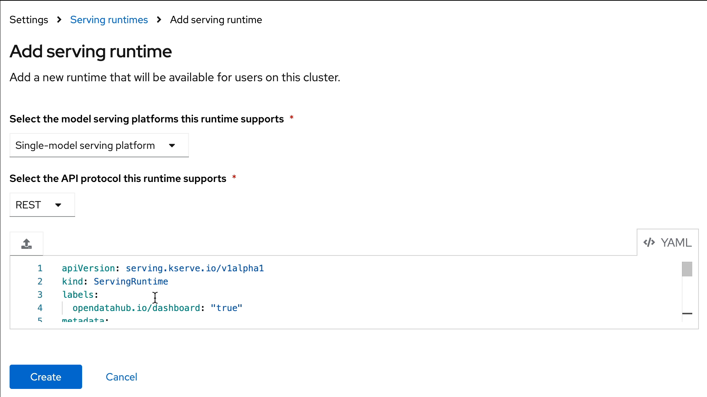

Creating OpenShift AI Resources - 1
Model Serving Runtimes
A model-serving runtime provides integration with a specified model server and the model frameworks that it supports. By default, Red Hat OpenShift AI includes the following model serving runTimes:
Multi-model * OpenVINO Model Server - Multi-model Single-model * OpenVINO Model Server * Caikit TGIS for KServe * TGIS Standalone for KServe * vLLM For KServe
However, if these runtimes do not meet your needs (if they don’t support a particular model framework, for example), you might want to add your own custom runtimes.
As an administrator, you can use the OpenShift AI interface to add and enable custom model-serving runtimes. You can then choose from your enabled runtimes when you create a new model server.
This exercise will guide you through the broad steps necessary to deploy a custom Serving Runtime in order to serve a model using the Ollama Model Serving Framework.
|
While RHOAI supports the ability to add your own runtime, it is up to you to configure, adjust, and maintain your custom runtimes. |
Add The Ollama Custom Runtime
-
Log in to RHOAI with a user who is part of the RHOAI admin group, for this lab we will be using the admin account.
-
In the RHOAI Console, Navigate to the Settings menu, then select Serving Runtimes
-
Select the Add Serving Runtime button:
-
For the model serving platform runtime, select: Single-Model Serving Platform.
-
For API protocol this runtime supports, select: REST
-
Click on Start from scratch in the window that opens up, paste the following YAML:
apiVersion: serving.kserve.io/v1alpha1 kind: ServingRuntime labels: opendatahub.io/dashboard: "true" metadata: annotations: openshift.io/display-name: Ollama name: ollama spec: builtInAdapter: modelLoadingTimeoutMillis: 90000 containers: - image: quay.io/rh-aiservices-bu/ollama-ubi9:0.1.45 env: - name: OLLAMA_MODELS value: /.ollama/models - name: OLLAMA_HOST value: 0.0.0.0 - name: OLLAMA_KEEP_ALIVE value: '-1m' name: kserve-container ports: - containerPort: 11434 name: http1 protocol: TCP multiModel: false supportedModelFormats: - autoSelect: true name: any -
After clicking the Create button at the bottom of the input area, you will see the new Ollama Runtime in the list. We can re-order the list as needed (the order chosen here is the order in which the users will see these choices).
Create a Data Science Project
Navigate to & select the Data Science Projects section.
-
Select the create data science project button.
-
Enter a name for your project, such as ollama-model.
-
The resource name should be populated automatically.
-
Optionally add a description to the data science project.
-
Select Create.